Stationary Quantile Matching
This example shows the functionalities of QuantileMatching.jl. They are illustrated by post-processing the simulated precipitations of the kda member from the ClimEx ensemble (Leduc et al., 2019) with respect to the observed precipitations recorded at the Montréal-Trudeau International Airport. To avoid seasonality, we only consider precipitation from May to October and to avoid non-stationarity, we restrict the period from 1955 to 2010.
The precipitation quantile matching procedure is performed in two steps. The first step is to match the empirical proportion of wet days between observations and simulations. The second step is to match the quantiles of simulated non-zero precipitation.
Load required Julia packages
Before executing this tutorial, make sure to have installed the following packages:
- CSV.jl (for loading the data)
- DataFrames.jl (for using the DataFrame type)
- Distributions.jl (for using distribution objects)
- ExtendedExtremes.jl (for modeling the bulk and the tail of a distribution)
- Extremes.jl (for modeling the tail of a distribution)
- Plots.jl (for plotting)
- QuantileMatching.jl
and import them using the following command:
julia> using CSV, DataFrames, Dates, Distributionsjulia> using ExtendedExtremes, Extremes, QuantileMatchingjulia> using Plots
Data preparation
Loading the observed daily precipitations (in mm)
# Load the data into a DataFrame
obs = QuantileMatching.dataset("observations")
dropmissing!(obs)
# Extract the values in a vector (including the zeros)
y = obs.PrecipitationPlot the observed series for the year 1955:
df = filter(row -> year(row.Date)==1955, obs)
Plots.plot(df.Date, df.Precipitation, label="", color=:grey,
xlabel="Date", ylabel="Observed precipitation (mm)")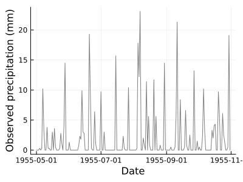
Loading the simulated daily precipitations (in mm)
# Load the data into a DataFrame
sim = QuantileMatching.dataset("simulations")
dropmissing!(sim)
# Extract the values in a vector (including the zeros)
x = sim.PrecipitationPlot the observed series for the year 1955:
df = filter(row -> year(row.Date)==1955, sim)
Plots.plot(df.Date, df.Precipitation, label="", color=:grey,
xlabel="Date", ylabel="Simulated precipitation (mm)")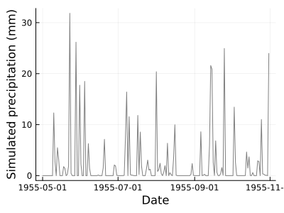
Frequency adjustment
Compute the proportion of wet days in the observations:
julia> p = pwet(y)0.40563241106719367
Find the threshold for which the proportion of wet days in the simulations matches the proportion of wet days in the observations:
julia> u = wet_threshold(x, p)0.34030526876449585
Censor the value below the threshold:
x̃ = censor(x, u)Extraction of non-zero precipitations
Extract the observed non-zero precipitations:
y⁺ = filter(val -> val >0, y)Extract the frequency adjusted non-zero simulated precipitations:
x⁺ = filter(val -> val >0, x̃)Store the frequency adjusted non-zero simulated precipitation in a DataFrame
results = DataFrame(Date = sim.Date[sim.Precipitation.>u])
results[:, :RAW] = x⁺
first(results,5)| Row | Date | RAW |
|---|---|---|
| Date | Float64 | |
| 1 | 1955-05-10 | 11.9656 |
| 2 | 1955-05-11 | 2.37501 |
| 3 | 1955-05-13 | 5.1358 |
| 4 | 1955-05-14 | 2.80354 |
| 5 | 1955-05-18 | 1.42283 |
Empirical Quantile Matching
Model definition
Defining the model:
julia> qmm = EmpiricalQuantileMatchingModel(y⁺, x⁺)EmpiricalQuantileMatchingModel{Stationary} targetsample::Vector{Float64}[4105] = [0.2,...,81.9] actualsample::Vector{Float64}[4178] = [0.0017,...,102.7605] nbins: 4178 extrapolation: Flat()
Quantile matching
Quantile matching of the non-zero simulated precipitations:
x̃⁺ = match.(qmm, x⁺)Comparison with the observations
Comparing the post-processed simulated precipitation distribution with the one for the observations
QuantileMatching.qqplot(y⁺, x̃⁺)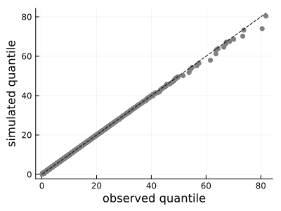
Fill in with dry days
Adding the zeros from the frequency adjusted values:
x̃[x̃ .> 0] = x̃⁺Store the corrected non-zero precipitation in the results DataFrame
results[:, :EQM] = x̃⁺
first(results,5)| Row | Date | RAW | EQM |
|---|---|---|---|
| Date | Float64 | Float64 | |
| 1 | 1955-05-10 | 11.9656 | 11.0 |
| 2 | 1955-05-11 | 2.37501 | 2.3 |
| 3 | 1955-05-13 | 5.1358 | 4.8 |
| 4 | 1955-05-14 | 2.80354 | 2.6 |
| 5 | 1955-05-18 | 1.42283 | 1.3 |
Gamma Quantile Matching
Piani et al. (2010) propose to use the Gamma distribution to perform parametric quantile matching of precipitation. This parametric quantile matching method is referred to here as Gamma Parametric Quantile Matching (GPQM).
Model definition
Modelling the non-zero observed precipitations with the Gamma distribution:
julia> fd_Y = fit(Gamma, y⁺)Distributions.Gamma{Float64}(α=0.7295092921426495, θ=9.333188848435453)
Goodness-of-fit of the model:
plot(QuantileMatching.histplot(y⁺, fd_Y, 0, 50),
QuantileMatching.qqplot(y⁺, fd_Y))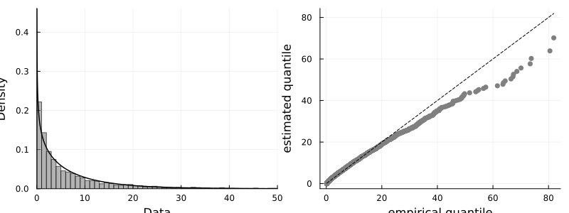
In this case, the Gamma distribution does not fit well the data. It is not surprising since precipitation is usually heavy-tailed but the Gamma distribution is light-tailed.
Modeling the non-zero simulated precipitations with the Gamma distribution:
julia> fd_X = fit(Gamma, x⁺)Distributions.Gamma{Float64}(α=0.6696322823377227, θ=10.943615623045797)
Goodness-of-fit of the model:
plot(QuantileMatching.histplot(x⁺, fd_X, 0, 50),
QuantileMatching.qqplot(x⁺, fd_X))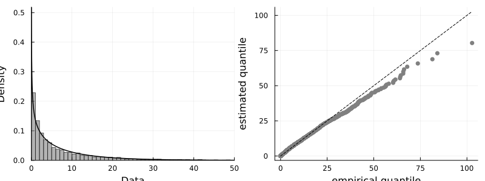
Defining the model:
julia> qmm = ParametricQuantileMatchingModel(fd_Y, fd_X)ParametricQuantileMatchingModel{Stationary} targetdist: Distributions.Gamma{Float64}(α=0.7295092921426495, θ=9.333188848435453) actualdist: Distributions.Gamma{Float64}(α=0.6696322823377227, θ=10.943615623045797)
Quantile matching
Quantile matching of the non-zero simulated precipitations:
x̃⁺ = match.(qmm, x⁺)Comparison with the observations
Comparing the post-processed simulated precipitation distribution with the one for the observations
QuantileMatching.qqplot(y⁺, x̃⁺)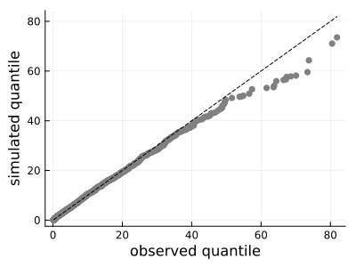
The corrected value distribution is not matching well the observation distribution. It is notably due to the fact that the Gamma distribution is light-tailed while precipitation is heavy-tailed.
Store the corrected non-zero precipitation in the results DataFrame
results[:, :GQM] = x̃⁺
first(results,5)| Row | Date | RAW | EQM | GQM |
|---|---|---|---|---|
| Date | Float64 | Float64 | Float64 | |
| 1 | 1955-05-10 | 11.9656 | 11.0 | 11.0904 |
| 2 | 1955-05-11 | 2.37501 | 2.3 | 2.40297 |
| 3 | 1955-05-13 | 5.1358 | 4.8 | 4.96291 |
| 4 | 1955-05-14 | 2.80354 | 2.6 | 2.80708 |
| 5 | 1955-05-18 | 1.42283 | 1.3 | 1.48924 |
Gamma-Generalized Pareto Quantile Matching
Gutjahr and Heinemann (2013) propose to use the Gamma distribution for the bulk and the generalized Pareto distribution for the right tail, i.e above the 95th quantile of non-zero precipitation. This parametric quantile matching method is referred to here as Gamma-Generalized Pareto Quantile Matching (GGPQM).
Model definition
Modelling the non-zero observed precipitations with the Gamma-Generalized Pareto distribution:
julia> # Threshold selection for the tail u = quantile(y⁺, .95) # Fit the Gamma distribution for the bulk24.8julia> f₁ = truncated(fit(Gamma, y⁺), 0, u) # Fit the Generalized Pareto distribution for the right tailTruncated(Distributions.Gamma{Float64}(α=0.7295092921426495, θ=9.333188848435453); lower=0.0, upper=24.8)julia> fd = Extremes.gpfit( y⁺[y⁺.>u] .-u )MaximumLikelihoodAbstractExtremeValueModel model : ThresholdExceedance data : Vector{Float64}[201] logscale : ϕ ~ 1 shape : ξ ~ 1 θ̂ : [2.500282369778531, -0.037218218094625825]julia> f₂ = GeneralizedPareto(u, exp(fd.θ̂[1]), fd.θ̂[2]) # Combining the two distributionsDistributions.GeneralizedPareto{Float64}(μ=24.8, σ=12.185934414542345, ξ=-0.037218218094625825)julia> fd_Y = MixtureModel([f₁, f₂], [.95, .05])MixtureModel{Distributions.Distribution{Distributions.Univariate, Distributions.Continuous}}(K = 2) components[1] (prior = 0.9500): Truncated(Distributions.Gamma{Float64}(α=0.7295092921426495, θ=9.333188848435453); lower=0.0, upper=24.8) components[2] (prior = 0.0500): Distributions.GeneralizedPareto{Float64}(μ=24.8, σ=12.185934414542345, ξ=-0.037218218094625825)
Goodness-of-fit of the model:
plot(QuantileMatching.histplot(y⁺, fd_Y, 0, 50),
QuantileMatching.qqplot(y⁺, fd_Y))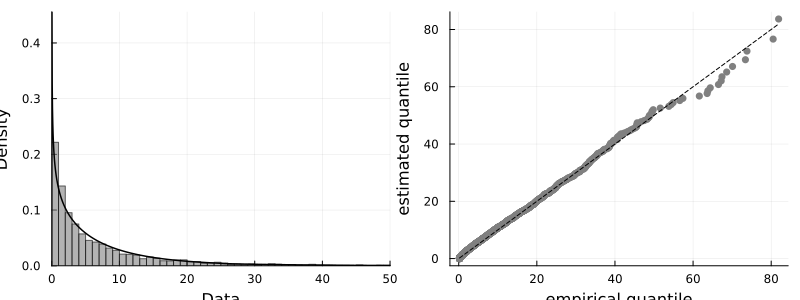
Modelling the non-zero simulated precipitations with the Gamma-Generalized Pareto distribution:
julia> # Threshold selection for the tail u = quantile(x⁺, .95) # Fit the Gamma distribution for the bulk26.615014517307287julia> f₁ = truncated(fit(Gamma, x⁺), 0, u) # Fit the Generalized Pareto distribution for the right tailTruncated(Distributions.Gamma{Float64}(α=0.6696322823377227, θ=10.943615623045797); lower=0.0, upper=26.615014517307287)julia> fd = Extremes.gpfit( x⁺[x⁺.>u] .-u )MaximumLikelihoodAbstractExtremeValueModel model : ThresholdExceedance data : Vector{Float64}[209] logscale : ϕ ~ 1 shape : ξ ~ 1 θ̂ : [2.5718318366757327, -0.05638788031685149]julia> f₂ = GeneralizedPareto(u, exp(fd.θ̂[1]), fd.θ̂[2]) # Combining the two distributionsDistributions.GeneralizedPareto{Float64}(μ=26.615014517307287, σ=13.089780832743658, ξ=-0.05638788031685149)julia> fd_X = MixtureModel([f₁, f₂], [.95, .05])MixtureModel{Distributions.Distribution{Distributions.Univariate, Distributions.Continuous}}(K = 2) components[1] (prior = 0.9500): Truncated(Distributions.Gamma{Float64}(α=0.6696322823377227, θ=10.943615623045797); lower=0.0, upper=26.615014517307287) components[2] (prior = 0.0500): Distributions.GeneralizedPareto{Float64}(μ=26.615014517307287, σ=13.089780832743658, ξ=-0.05638788031685149)
Goodness-of-fit of the model:
plot(QuantileMatching.histplot(x⁺, fd_X, 0, 50),
QuantileMatching.qqplot(x⁺, fd_X))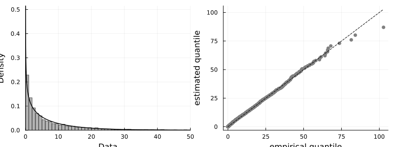
Defining the model:
julia> qmm = ParametricQuantileMatchingModel(fd_Y, fd_X)ParametricQuantileMatchingModel{Stationary} targetdist: MixtureModel{Distributions.Distribution{Distributions.Univariate, Distributions.Continuous}}(K = 2) components[1] (prior = 0.9500): Truncated(Distributions.Gamma{Float64}(α=0.7295092921426495, θ=9.333188848435453); lower=0.0, upper=24.8) components[2] (prior = 0.0500): Distributions.GeneralizedPareto{Float64}(μ=24.8, σ=12.185934414542345, ξ=-0.037218218094625825) actualdist: MixtureModel{Distributions.Distribution{Distributions.Univariate, Distributions.Continuous}}(K = 2) components[1] (prior = 0.9500): Truncated(Distributions.Gamma{Float64}(α=0.6696322823377227, θ=10.943615623045797); lower=0.0, upper=26.615014517307287) components[2] (prior = 0.0500): Distributions.GeneralizedPareto{Float64}(μ=26.615014517307287, σ=13.089780832743658, ξ=-0.05638788031685149)
Quantile matching
Quantile matching of the non-zero simulated precipitations:
x̃⁺ = match.(qmm, x⁺)Comparison with the observations
Comparing the post-processed simulated precipitation distribution with the one for the observations
QuantileMatching.qqplot(y⁺, x̃⁺)Store the corrected non-zero precipitation in the results DataFrame
results[:, :GGPQM] = x̃⁺
first(results,5)| Row | Date | RAW | EQM | GQM | GGPQM |
|---|---|---|---|---|---|
| Date | Float64 | Float64 | Float64 | Float64 | |
| 1 | 1955-05-10 | 11.9656 | 11.0 | 11.0904 | 11.2319 |
| 2 | 1955-05-11 | 2.37501 | 2.3 | 2.40297 | 2.41975 |
| 3 | 1955-05-13 | 5.1358 | 4.8 | 4.96291 | 5.00396 |
| 4 | 1955-05-14 | 2.80354 | 2.6 | 2.80708 | 2.82719 |
| 5 | 1955-05-18 | 1.42283 | 1.3 | 1.48924 | 1.49904 |
Extended Generalized Pareto Quantile Matching
Gobeil et al. (2023, submitted) propose to use the extended Generalized Pareto distribution developed by Gamet and Jalbert (2022) to perform parametric quantile matching of precipitation. This parametric quantile matching method is referred to here as Extended Generalized Pareto Quantile Matching (EGPQM).
Model definition
Modelling the non-zero observed precipitations with the extended Generalized Pareto distribution:
julia> fd_Y = fit(ExtendedGeneralizedPareto{TBeta}, y⁺)ExtendedExtremes.ExtendedGeneralizedPareto{ExtendedExtremes.TBeta{Float64}}( V: ExtendedExtremes.TBeta{Float64}(α=0.2600426944386879) G: Distributions.GeneralizedPareto{Float64}(μ=0.0, σ=8.742467370007379, ξ=0.07293435088986122) )
Goodness-of-fit of the model:
plot(QuantileMatching.histplot(y⁺, fd_Y, 0, 50),
QuantileMatching.qqplot(y⁺, fd_Y))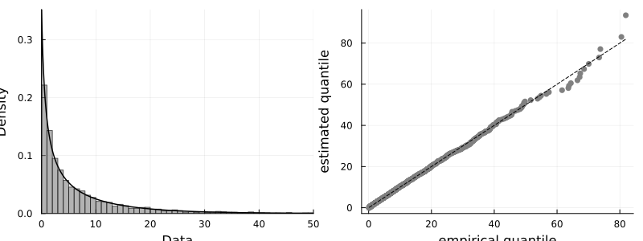
Modelling the non-zero simulated precipitations with the extended Generalized Pareto distribution:
julia> fd_X = fit(ExtendedGeneralizedPareto{TBeta}, x⁺)ExtendedExtremes.ExtendedGeneralizedPareto{ExtendedExtremes.TBeta{Float64}}( V: ExtendedExtremes.TBeta{Float64}(α=0.17021521793893313) G: Distributions.GeneralizedPareto{Float64}(μ=0.0, σ=10.036043780211887, ξ=0.04700069268683122) )
Goodness-of-fit of the model:
plot(QuantileMatching.histplot(x⁺, fd_X, 0, 50),
QuantileMatching.qqplot(x⁺, fd_X))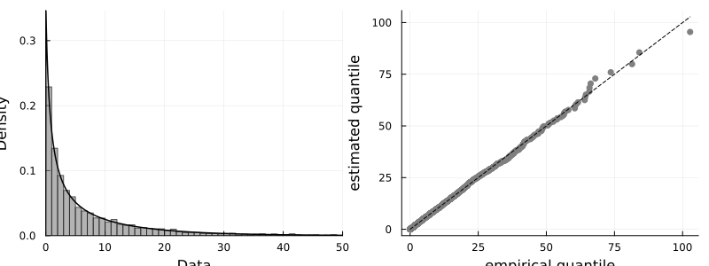
Defining the model:
julia> qmm = ParametricQuantileMatchingModel(fd_Y, fd_X)ParametricQuantileMatchingModel{Stationary} targetdist: ExtendedExtremes.ExtendedGeneralizedPareto{ExtendedExtremes.TBeta{Float64}}( V: ExtendedExtremes.TBeta{Float64}(α=0.2600426944386879) G: Distributions.GeneralizedPareto{Float64}(μ=0.0, σ=8.742467370007379, ξ=0.07293435088986122) ) actualdist: ExtendedExtremes.ExtendedGeneralizedPareto{ExtendedExtremes.TBeta{Float64}}( V: ExtendedExtremes.TBeta{Float64}(α=0.17021521793893313) G: Distributions.GeneralizedPareto{Float64}(μ=0.0, σ=10.036043780211887, ξ=0.04700069268683122) )
Quantile matching
Quantile matching of the non-zero simulated precipitations:
x̃⁺ = match.(qmm, x⁺)Comparison with the observations
Comparing the post-processed simulated precipitation distribution with the one for the observations
QuantileMatching.qqplot(y⁺, x̃⁺)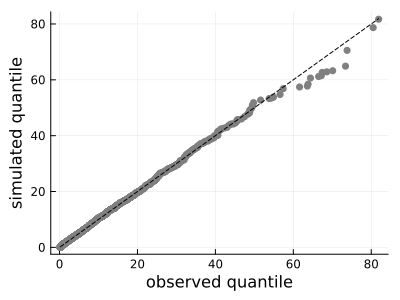
results[:, :EGPQM] = x̃⁺
first(results,5)| Row | Date | RAW | EQM | GQM | GGPQM | EGPQM |
|---|---|---|---|---|---|---|
| Date | Float64 | Float64 | Float64 | Float64 | Float64 | |
| 1 | 1955-05-10 | 11.9656 | 11.0 | 11.0904 | 11.2319 | 11.1357 |
| 2 | 1955-05-11 | 2.37501 | 2.3 | 2.40297 | 2.41975 | 2.31107 |
| 3 | 1955-05-13 | 5.1358 | 4.8 | 4.96291 | 5.00396 | 4.89338 |
| 4 | 1955-05-14 | 2.80354 | 2.6 | 2.80708 | 2.82719 | 2.71734 |
| 5 | 1955-05-18 | 1.42283 | 1.3 | 1.48924 | 1.49904 | 1.39763 |
Comparison of quantile matched data
v = [y⁺]
for col in [:RAW, :EQM, :GQM, :GGPQM, :EGPQM]
push!(v, results[:,col])
end
df_indices = DataFrame(Index=String[],
Observations=Float64[],
RAW=Float64[],
EQM=Float64[],
GQM=Float64[],
GGPQM=Float64[],
EGPQM=Float64[])
push!(df_indices, ["SDII", wet_mean.(v)...])
push!(df_indices, ["skewness", skewness.(v)...])
push!(df_indices, ["R10", pwet.(v,10)...])
push!(df_indices, ["p90wet", wet_quantile.(v, .9, 1)...])
push!(df_indices, ["p98wet", wet_quantile.(v, .98, 1)...])
push!(df_indices, ["p98wetamountmean", wet_mean.(v, wet_quantile.(v, .98, 1))...])| Row | Index | Observations | RAW | EQM | GQM | GGPQM | EGPQM |
|---|---|---|---|---|---|---|---|
| String | Float64 | Float64 | Float64 | Float64 | Float64 | Float64 | |
| 1 | SDII | 6.80865 | 7.3282 | 6.80773 | 6.79699 | 6.96395 | 6.87382 |
| 2 | skewness | 2.78132 | 2.70546 | 2.78074 | 2.60407 | 2.78426 | 2.81548 |
| 3 | R10 | 0.215347 | 0.243657 | 0.22044 | 0.228818 | 0.23145 | 0.229296 |
| 4 | p90wet | 20.6 | 21.5128 | 20.0979 | 19.4005 | 19.8582 | 19.9086 |
| 5 | p98wet | 38.6 | 41.2522 | 38.0632 | 36.5532 | 38.4793 | 38.5494 |
| 6 | p98wetamountmean | 50.4186 | 52.4103 | 49.4934 | 46.1194 | 49.2414 | 49.5585 |
obs[:,:Year] = year.(obs.Date)
df_annualmaxima_obs = combine(groupby(obs, :Year), :Precipitation => maximum => :Observation)
results[:,:Year] = year.(results.Date)
df_annualmaxima_sim = combine(groupby(results, :Year), :RAW => maximum => :RAW)
df_annualmaxima_sim = combine(groupby(results, :Year),
[col => maximum => col for col in [:RAW, :EQM, :GQM, :GGPQM, :EGPQM]])
df_annualmaxima = innerjoin(df_annualmaxima_obs, df_annualmaxima_sim, on=:Year)
RV20 = Float64[]
RV100 = Float64[]
for col in [:Observation, :RAW, :EQM, :GQM, :GGPQM, :EGPQM]
fittedGEV = gevfit(df_annualmaxima[:,col])
push!(RV20, returnlevel(fittedGEV, 20).value[])
push!(RV100, returnlevel(fittedGEV, 100).value[])
end
push!(df_indices, ["RV20", RV20...])
push!(df_indices, ["RV100", RV100...])| Row | Index | Observations | RAW | EQM | GQM | GGPQM | EGPQM |
|---|---|---|---|---|---|---|---|
| String | Float64 | Float64 | Float64 | Float64 | Float64 | Float64 | |
| 1 | SDII | 6.80865 | 7.3282 | 6.80773 | 6.79699 | 6.96395 | 6.87382 |
| 2 | skewness | 2.78132 | 2.70546 | 2.78074 | 2.60407 | 2.78426 | 2.81548 |
| 3 | R10 | 0.215347 | 0.243657 | 0.22044 | 0.228818 | 0.23145 | 0.229296 |
| 4 | p90wet | 20.6 | 21.5128 | 20.0979 | 19.4005 | 19.8582 | 19.9086 |
| 5 | p98wet | 38.6 | 41.2522 | 38.0632 | 36.5532 | 38.4793 | 38.5494 |
| 6 | p98wetamountmean | 50.4186 | 52.4103 | 49.4934 | 46.1194 | 49.2414 | 49.5585 |
| 7 | RV20 | 73.9995 | 78.1031 | 73.9386 | 68.4084 | 74.7401 | 75.4223 |
| 8 | RV100 | 95.9985 | 94.6291 | 88.7504 | 82.5726 | 91.7176 | 92.952 |